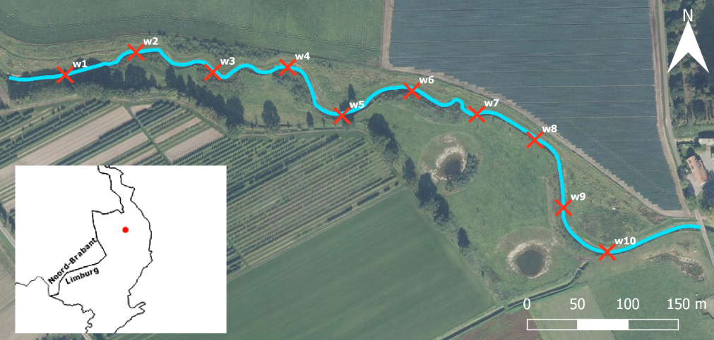

Pilot study A Deriving water quality parameters of a waterway from drone-based multispectral camera
Investigating the possibility of a Parrot Sequoia multispectral camera to estimate turbidity and total suspended solids in water
 Parrot Sequoia multispectral camera mounted under a drone.
Parrot Sequoia multispectral camera mounted under a drone.
Approach

*Taken from 10 sample locations
**Calculated using a single band turbidity algorithm by Nechad et al. (2009)
Study area Lollebeek (lat: 51.489167,long: 6.055111)

Reflectance maps

Reflectance maps of Green, Red, Red Edge and NIR bands (scale is based on specific percentile range )

Calculated band ratio and band index reflectance maps (scale is based on specific percentile range )
Turbidity maps calculated with the single band turbidity equation for Red, Red Edge and NIR band (scale is based on the min-max range of the 10 validation points)
Data analysis
Descriptive statistics| Map | Min | Q1 | Median | Mean | Q3 | Max |
|---|---|---|---|---|---|---|
| Rood | 0.057 | 0.058 | 0.062 | 0.062 | 0.065 | 0.078 |
| Red Edge | 0.055 | 0.070 | 0.074 | 0.075 | 0.081 | 0.089 |
| NIR | 0.064 | 0.081 | 0.091 | 0.090 | 0.098 | 0.107 |
| Groen/ NIR | 0.483 | 0.537 | 0.589 | 0.609 | 0.653 | 0.863 |
| Rood/ NIR | 0.508 | 0.639 | 0.737 | 0.717 | 0.784 | 0.945 |
| Red Edge/ NIR | 0.803 | 0.819 | 0.831 | 0.838 | 0.859 | 0.889 |
| Rood/ Red Edge | 0.606 | 0.795 | 0.879 | 0.854 | 0.925 | 1.091 |
| NDVI | 0.028 | 0.126 | 0.156 | 0.177 | 0.227 | 0.342 |
| NDWI | -0.362 | -0.302 | -0.261 | -0.250 | -0.211 | -0.074 |
| NDRE | 0.059 | 0.076 | 0.093 | 0.088 | 0.099 | 0.110 |
| FNU (Rood) | 18.220 | 23.050 | 25.900 | 26.310 | 27.670 | 39.230 |
| FNU (Red Edge) | 79.020 | 113.060 | 123.020 | 130.020 | 146.890 | 183.930 |
| FNU (NIR) | 113.700 | 165.500 | 202.800 | 207.000 | 237.800 | 311.500 |
Predictive models